Shobara, Hiroshima: things to do, food and stays
Shobara · Hiroshima
Shobara
Highlighted on the Hiroshima map.

Stay
せとうち古民家ステイズHiroshima 長者屋
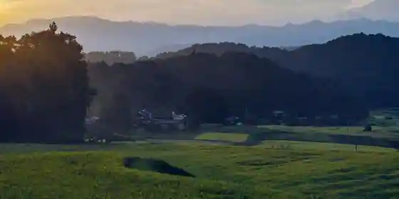
Setochi Ko Minka Suteizu Hiroshima Choja Ya
Inn in Hiwa, Shobara with a renovated traditional house and a quiet countryside setting.
せとうち古民家ステイズHiroshima 不老仙
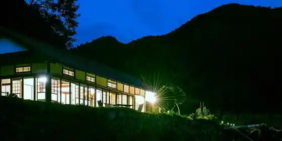
Setochi Ko Minka Suteizu Hiroshima Furo Sen
Inn in Uetani, Shobara with a renovated traditional house.
せとうち古民家ステイズHiroshima こざこ森
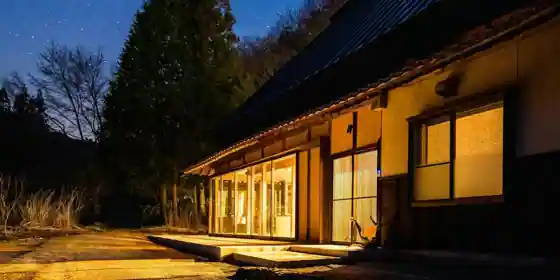
Setochi Ko Minka Suteizu Hiroshima Kozako Mori
Inn in Takano, Shobara with a renovated traditional house.
ホテル比婆荘
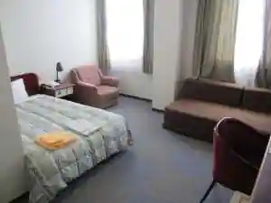
Hotel Hiba So
備北丘陵公園 湖畔ステイズ庄原
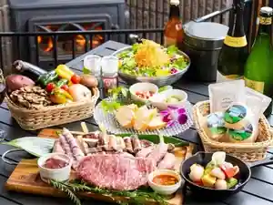
Bihoku Kyuryo Koen Kohan Suteizu Shobara
Inn in Mikkaichi, Shobara with lakeside location.
桜花の郷 ラ・フォーレ庄原
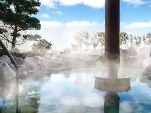
Oka No Sato Ra Fore Shobara
Inn at Tanenotennen Onsen in Shinjo, Shobara with open-air baths and scenic views.
せとうち古民家ステイズＨｉｒｏｓｈｉｍａ 不老仙
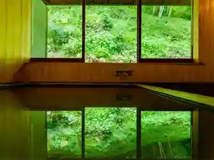
Setochi Ko Minka Suteizu Hiroshima Furo Sen
Inn in Uetani, Shobara with a renovated traditional house.
せとうち古民家ステイズＨｉｒｏｓｈｉｍａ 長者屋
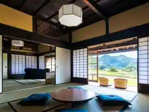
Setochi Ko Minka Suteizu Hiroshima Choja Ya
Inn in Hiwa, Shobara with a renovated traditional house and a quiet countryside setting.
せとうち古民家ステイズＨｉｒｏｓｈｉｍａ こざこ森
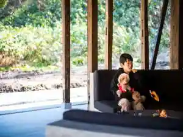
Setochi Ko Minka Suteizu Hiroshima Kozako Mori
Inn in Takano, Shobara with a renovated traditional house.
帝釈峡観光ホテル錦彩館
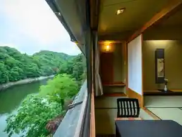
Taishakukyo Kanko Hotel Nishiki Sai Kan
Hotel in Tojo, Shobara with scenic views and lakeside location.
休暇村帝釈峽
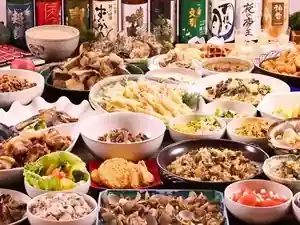
Kyukamura Taishakukyo
帝釈峡観光ホテル別館 養浩荘
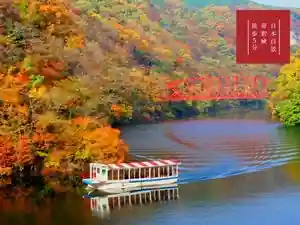
Taishakukyo Kanko Hotel Bekkan Yoko So
Dining
そば処 みのり

Soba Tokoro Minori
ドライブイン ミッキー
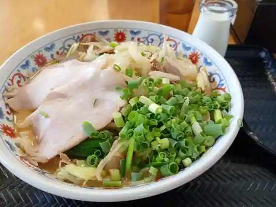
Doraibu Inn Mikki
グリーンフィールド西城
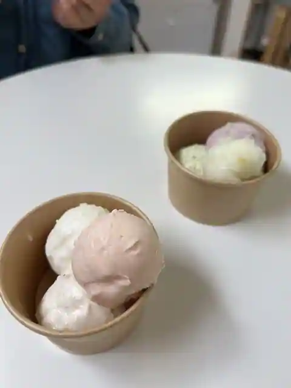
Gurinfirudo Saijo
道の駅 たかの
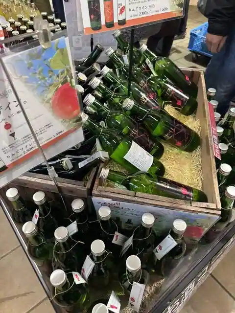
Michi No Eki Takano
遊ＹＯＵさろん東城
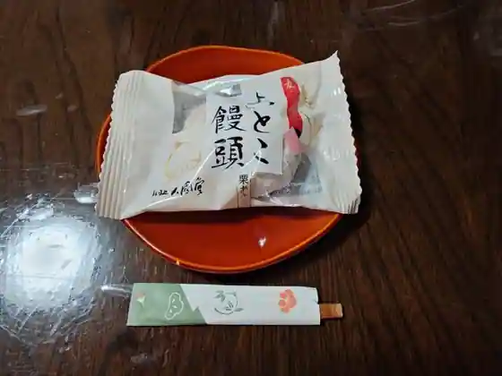
Yu YOU Saron Tojo
風龍 庄原店
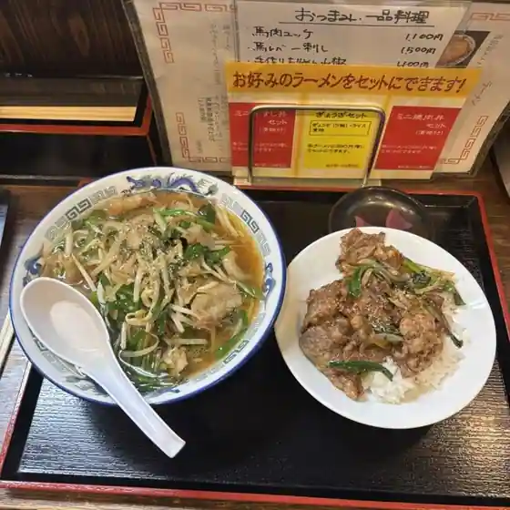
Kaze Ryu Shobara
すけあくろう
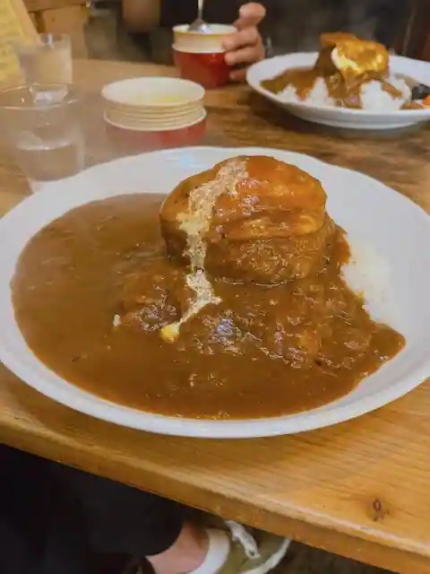
Sukeakuro
竹屋饅頭本舗 東城本店
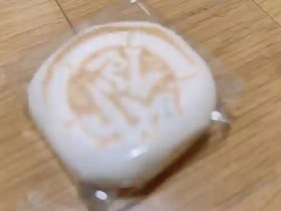
Takeya Manju Honpo Tojo Hon
くにごろうくん
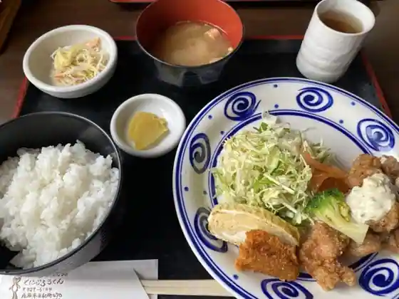
Kunigorokun
富久鮨
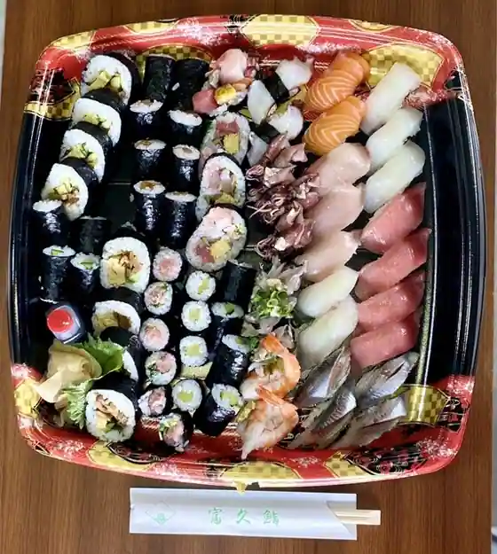
Fuku Sushi
和泉光和堂 本店
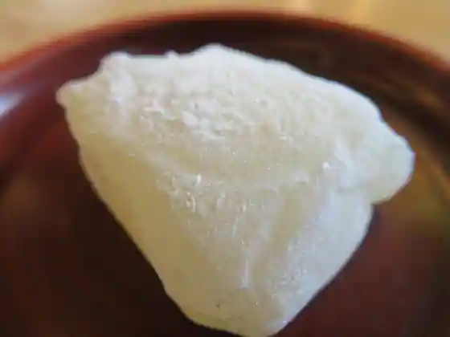
Izumi Kowa Do Hon
麺処 おおつき亭
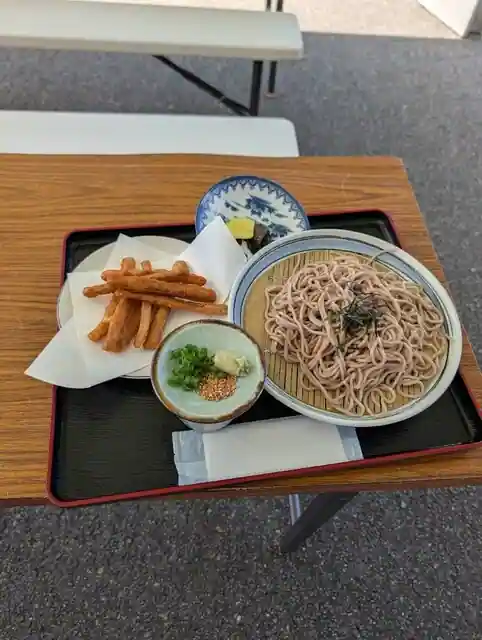
Men Tokoro Otsuki Tei
風龍
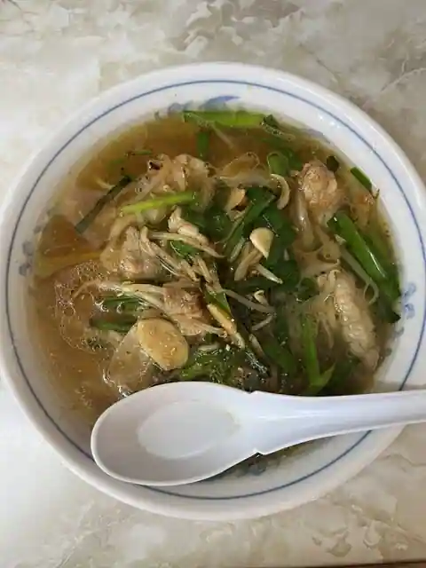
Kaze Ryu
大国堂
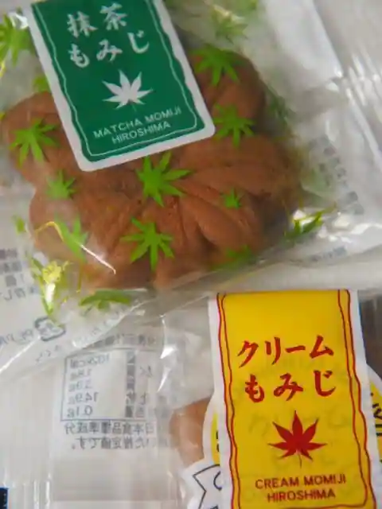
Taikoku Do
和食 もりおか
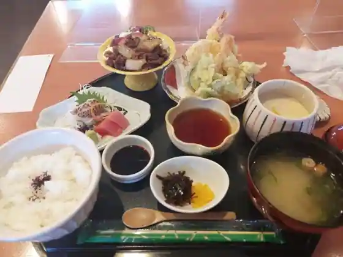
Washoku Morioka
Queen's Gelato
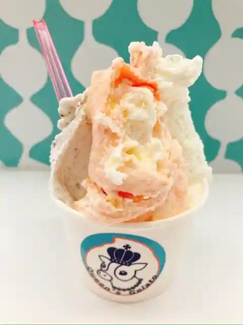
Queen's Gelato
蛍
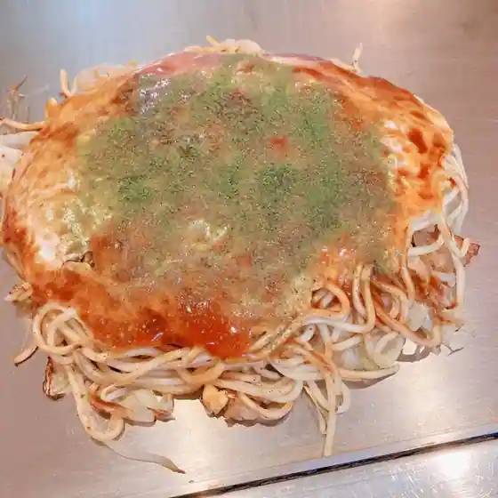
Hotaru
Cafe EL＋
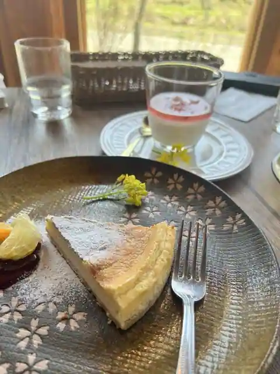
Cafe EL +
カレー屋工房
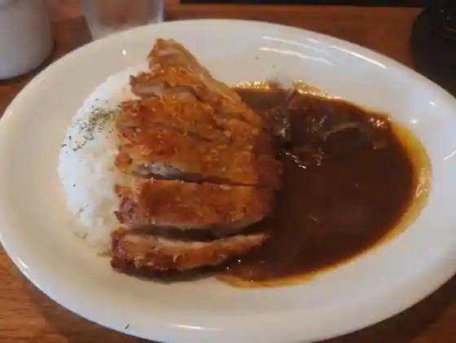
Kare Ya Kobo
ドライブインおちあい
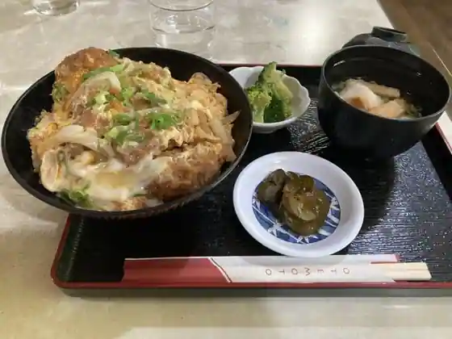
Doraibuin Ochiai
さくら食堂
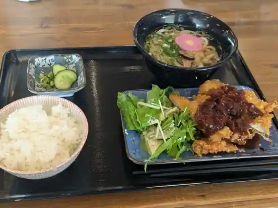
Sakura Shokudo
岩月鉄板食堂 淑
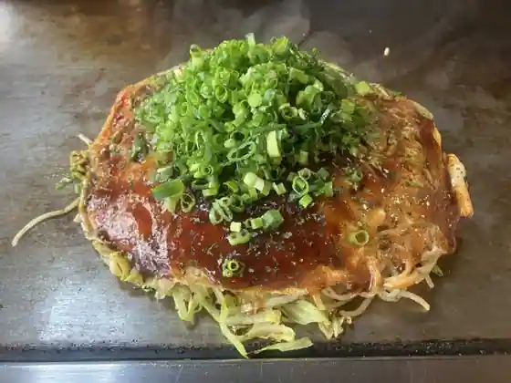
Iwatsuki Teppan Shokudo Shuku
たかのキッチン
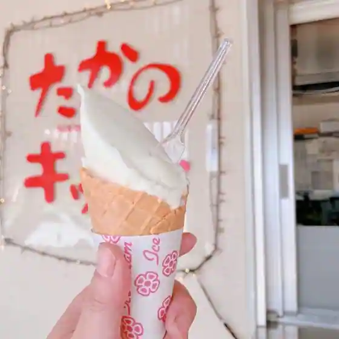
Takano Kitchen
Sights
Kokuei Bihoku Kyuryo Park
Bingo Shobara Eki

Osu Hashi
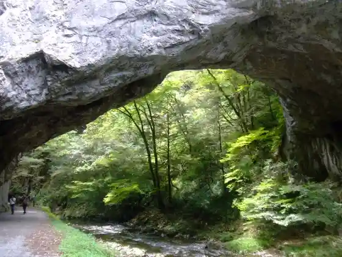
Hiba Yama
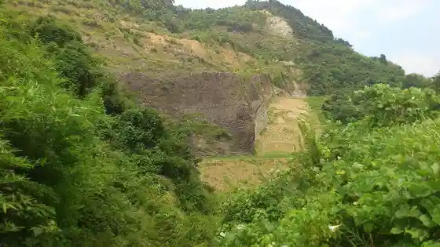
Roadside Station Taka no